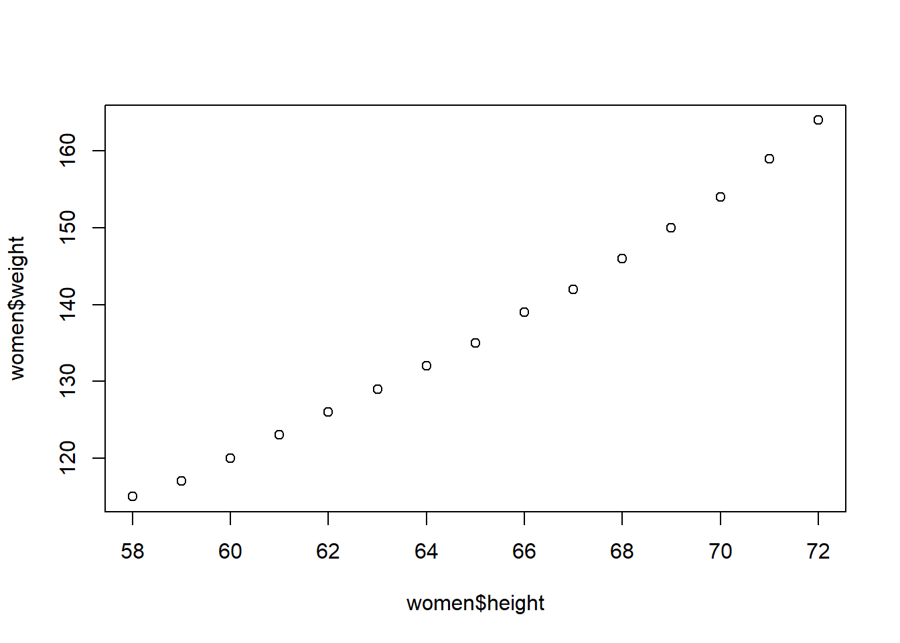

12 Exam 1 Practice
You should expect to be able to do 7 to 10 of these type problems for your exam (50 minutes).
Load the
rockdata set. How many observations and variables are in therockdata set?What was the purpose of this dataset?
What are the units of measurement for
peri?In the
rockdata set what is the standard deviation ofarea? 2683.8488617How many rocks have an
areaof greater than 4333? 41How many rocks have an
areaof greater than 4333 and less than 7333? 14Create a variable called
good.funwhich is area divided by perimeter squared. What is the average ofgood.fun? 0.0020362Add a new observation that to this dataframe that has an
areaof 17777,periof 7777,shapeof 7777, and apermof 7777. Can you do this?What is the mean of area for including the new rock you have added?
Using the
womendata set, what is the average BMI for all women?What is the average BMI for
women?What is the correlation between height and weight in the
womendataset?Make a histogram plot of the area variable from
rock.Use a bivariate plot of
rockdata to identify which variable are most correlated. Confirm your answer with a correlation table. Were you right?Do this math in R: 3333 squared divided by the square root of 78.
Make this sequence using
repandseqfunctions: 1 2 3 1 2 3 1 2 3 1 2 3Make this sequence using
repandseqfunctions: 97, 96, 95, 94, 93, 92, 91, 90, 89, 97, 96, 95, 94, 93, 92, 91, 90, 89, 97, 96, 95, 94, 93, 92, 91, 90, 89- Make this plot: 
What is the heaviest car in the
mtcarsdataset in kg?How many cars in
mtcarsdataset have more than 4 cylinders?Create this dataframe called
Gerry:Add column called
aatoGerrywhich are the numbers 11120, 11121, 11122, 11123, 11124, 11125, 11126, 11127, 11128, 11129Have fun. You are doing
awesome!
#Machine Learning?
Have we talked about the Target Pregnancy Story yet?
How Target Figured Out A Teen Girl Was Pregnant Before Her Father Did
This is where the fun stuff begins! What we have learned up to this point has barely scratched the surface of what R is capable of. In the world of data science, R is used for three primary purposes, those purposes are (1) data transformation, (2) data wrangling, (3) machine learning. The other two purposes have been covered in earlier chapters of this book. The reason we covered the other topics first is that that lay the foundation. In the real world, it is likely you will never be given a clean data set, and you will have to do some wrangling and transformation before anything else is possible. After all, in the experience of many data science students, cleaning the data is the most tedious and time consuming process of a project.
Enough of the old stuff, what is machine learning? According to the Merriam-Webster Dictionary, machine learning is “the process by which a computer is able to improve its own performance by continuously incorporating new data into an existing statistical model.” Let’s take a trip back to the Target story discussed in the introductory chapter. The data scientist, or more likely data scientists (collaborative work is essential in this field), that worked on that model were likely experts in machine learning. They were able to train the computer to look through thousands (probably more) of customers’ data and the computer, based off the algorithms written by these “data nerds,” was able to predict whether a customer was pregnant! Think of other possible applications of this technology? We could predict how well a student will preform on an exam, the risk of someone suffering from a heart attack, or the likelihood that someone will default on a loan. Every field in existence today could find a way to implement machine learning to optimize their business.
There are two branches of machine learning, supervised and unsupervised. Both have their own unique uses, however in this course we will focus on supervised machine learning. Supervised machine learning required us to provide a clean data set with clearly defined variables and instructions. Essentially, we give the computer the information it needs and provide it with specific instructions detailing what we would like to see happen, and it does the rest. Linear regression is typically the first method of supervised learning people are introduced to, and it will be the focus of this chapter.
Note, these concepts are not all common sense and can be difficult to wrap your head around at times. Be sure to constantly turn to your instructor or peers for assistance and remember that there are hundreds of online resources at your disposal. As with anything though, practice makes perfect. The popular rule states that mastering a skill can take upwards of 10,000 hours! Now, this course is not going to take you 10 years to complete, however the goal is that by the end of this chapter you will know your way around the basics of linear regression.